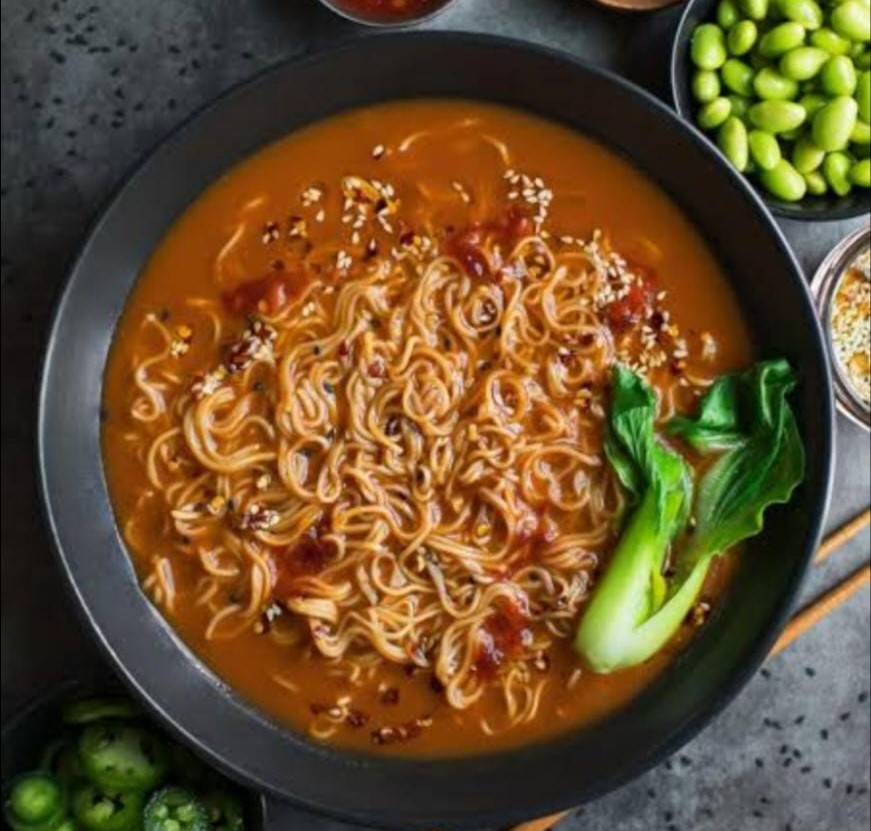
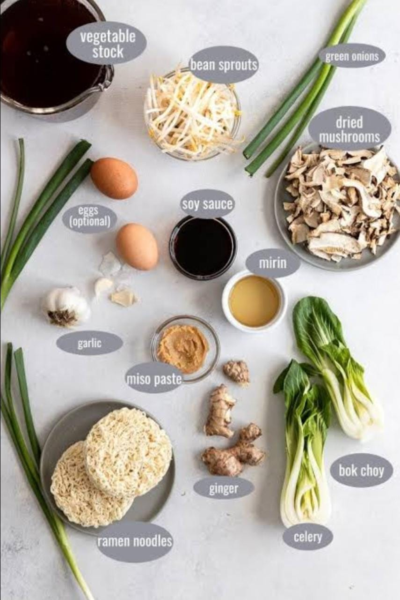

Veg Ramen
Home
Ramen (/'ra:mən/) (拉麺, ラーメン or らーめん, rāmen, IPA: [ɾaꜜ:meɴ]) is a Japanese noodle dish. It consists of Chinese-style wheat noodles (or 中華麺, chūkamen) served in a broth; common flavors are soy sauce and miso, with typical toppings including sliced pork (chāshū), nori (dried seaweed), menma (bamboo shoots), and scallions. Ramen has its roots in Chinese noodle dishes. Nearly every region in Japan has its own variation of ramen, such as the tonkotsu (pork bone broth) ramen of Kyushu and the miso ramen of Hokkaido.

Ingredients
2 TBSP light sesame oil or avocado oil
3/4-1 cup chopped dried porcini mushrooms
3 cloves garlic , smashed and minced
4 scallions , thinly sliced white + greens
3-4 cups low-sodium vegetable broth
3-4 cups low-sodium vegetable broth
1-2 TBSP Sriracha
1-2 TBSP Sriracha
4-5 ounces uncooked ramen noodles
fried garlic +chili oil
your favourite toppings

Nutrition Facts
Calories 326
Total Fat 9.8g
Calcium 25mg
Sodium 452mg
Total Carbohydrate 24.0g
Potassium 139mg
Iron 1.61mg
Procedure
First make the fried garlic in chili oil. Heat 1/4 cup oil in a medium pot over medium heat. Once hot, add thinly sliced garlic and pan fry, stirring often, until garlic is just beginning to turn golden, approx. 3 minutes. Stir in sesame seeds and cook an additional minute until garlic is crisp and toasty. Carefully transfer mixture to a small bowl and add crushed red pepper flakes. Mix well and set aside.
Bring the same pot to medium-high heat with a drizzle of oil and add garlic, chopped green onion (whites only – save the greens for topping) and chopped dried porcini mushrooms. Sauté until fragrant, approx, 1 minute.
Add your broth, soy sauce, tomato paste, and Sriracha.
Simmer, covered, on medium-low heat for 10 minutes.
While the soup simmers, prep your choice of toppings.
Once your broth is fragrant and ready, strain by pouring through a fine mesh sieve/strainer and add back into the pot, removing the onion and dried mushroom bits.
Give the broth a little taste and further season if/as desired. A little extra Sriracha will add heat while extra soy sauce will add saltiness and umami. For a brothier, soup-like ramen bowl feel free to add an extra cup of broth and adjust seasoning to taste.
For a thicker ramen broth, cook your noodles directly in the simmering broth for approx. 3-4 minutes or until tender. For a thinner broth, feel free to cook ramen seperately and add before serving.
If you prefer any of the other veggies softened versus raw (sliced carrots or jalapeños for instance) you can absolutely add them to the broth to simmer/cook until tender as well! This soup is crazy easy to customize.
Now the tasy veg ramen is ready to eat. Enjoy it..!
Expert Guide
Back ←
Scroll to Top ↑